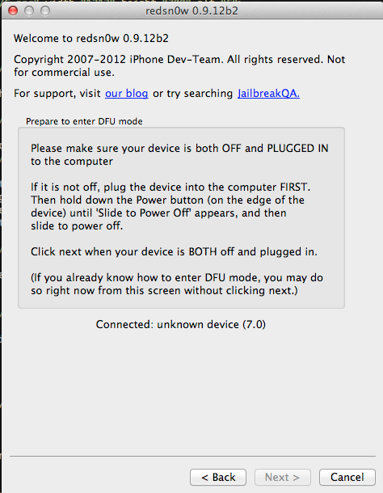
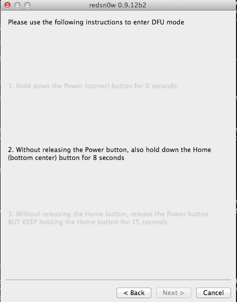
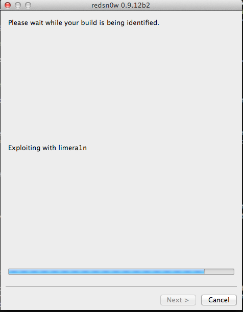
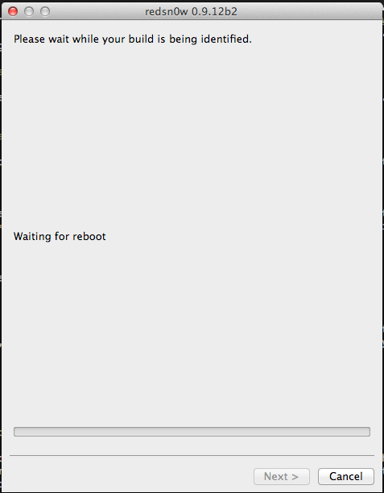
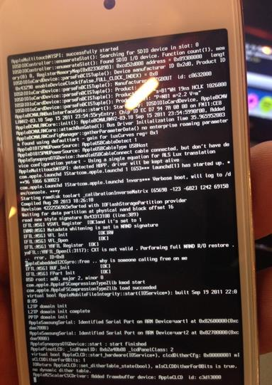
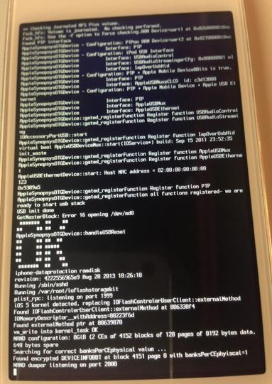

In the previous article, we looked at how we can use Keychain-Dumper and Snoop-it to analyze and dump the contents of the Keychain from an IOS device. In this article, we will look at how we can boot a non-jailbroken device using a custom ramdisk and analyze the contents of the device.
So what is the need of booting a device using a custom ramdisk ? Imagine a scenario where you only have temporary access to a device and you can’t jailbreak it. You just have access to the device for say like 30 minutes. In that time, you can boot the device using a custom ramdisk, brute force the passcode, and dump all the information for later analysis. The best thing is that the device does not need to be jailbroken in order for you to carry out this attack. Ofcouse, if the device is using a alphanumeric passcode, then it might take even more time to bruteforce the passcode. You can imagine this as similar to booting a windows machine with a Linux live CD, and then mounting the windows partition and then using the Linux OS to access the contents of the hard drive. However, booting a device using a custom ramdisk requires a bootrom exploit. The bootrom is the first significant code that runs on an iDevice. A bootrom exploit allows us to bypass the bootrom signature checks on the Low level bootloader and hence boot the device using a custom ramdisk. Such an exploit could also allow the user to run unsigned code and hence create an untethered jailbreak. A full list of all the publicly available bootrom exploits can be found here. A bootrom exploit once found cannot be fixed by Apple by releasing a new IOS version but can only be fixed by a new hardware release. At the time of writing of this article, there is no bootrom exploit discovered from A5 device or later. The bootrom exploit we will be using in this article will only work on A4 devices. I will be using an iPod touch 4th Generation in this article as it has an A4 chip. In this article, we will only be focussing on booting up the device using a custom ramdisk and we will focus on post exploitation steps in the next article.
A very easy way would be to download this tool which allows for automatic SSH ramdisk creation. Its very simple to use and you check this youtube video for more details.However, in this article, we will be looking at Sogeti data protection tools mainly because it provides a lot of powerful python scripts that we can leverage.
A full set of instructions on how to boot using the custom ramdisk can be found here. We will be following the same instructions on a system running Mac OSX 10.8.4.
First of all, make sure that Mercurial is installed on your system.
Click to Enlarge
Then create a new directory and navigate inside it. Then install the ldid tool, make sure its executable and move it to /usr/bin.
Click to Enlarge
Then we need to create some symlinks. Please note that in the second command shown below, we have created a symlink to the Xcode.App folder. Usually, if you are an IOS developer and you have multiple versions of Xcode installed on your system, you might have named them differently, for e.g Xcode-4.5.2 or Xcode-5.1 in your Applications folder. Hence, please be aware that this command may fail in that case and you will get an error later that says iOS SDK not found. A good solution would be to just rename the Xcode app in your applications folder as just Xcode.
Click to Enlarge
Next, we need to install OSXFuse which is used to create file systems for OS X.Depending on the operating system that you are running, some versions of OSXFuse may not be compatible. Hence, be sure to download the version that works with your operating system. In my case, i am downloading version 2.5.4 which works well with OS X 10.8.4.
Click to Enlarge
Click to Enlarge
Then there are certain python modules that you need to install.
Click to Enlarge
The next step is to build the custom ramdisk and kernel. For that, we need to clone the iphone data protection repository first.
Click to Enlarge
Then we use the following command to create the filesystem.
Click to Enlarge
Then we download redsn0w and copy the Keys.plist file in the present directory.
Click to Enlarge
Now you need to download the IPSW file for any version of IOS 5. It doesn’t matter which operating system the target device is currently running. You can download the IPSW files from here depending on your device. Once the IPSW file is downloaded, copy it into the current directory. Then use the following command to patch the kernel and give the argument as the IPSW file that you just downloaded.
Click to Enlarge
This will create a .sh file that we can use to build the ramdisk. Let’s run it.
Click to Enlarge
Once the ramdisk has been created, you will be shown the command that you need to use to boot the ramdisk.
Click to Enlarge
Now let’s use this command to boot with our custom ramdisk and the patched kernel. Please note that even though the command started with redsn0w, we have replaced that with the redsnow binary by navigating inside the redsn0w folder.
Click to Enlarge
This will open up redsn0w.

Now, my iPod is connected to the device but not switched off. Hence let me switch it off as requested by redsn0w. Once it is switched off, the next button on redsn0w will become enabled. Click on it and you will see that redsn0w will ask you to put your device in DFU mode.

Let’s follow the instructions that redsn0w gives. Once your device has entered DFU mode, you will see that redsn0w has now begun injecting the exploit.

It will then reboot the device.

This is how your device will look like. After some time, you will see a big OK sign on the device that confirms that the exploit has been successful and the custom ramdisk has successfully been started.

The data protection tools also contains a python utility called usbmux that we can now use to access the device over ssh. Let’s set up the relaying using the tcprelay python script.
Click to Enlarge
Now on a seperate tab, we can ssh to the localhost at port number 2222 and usbmux will forward the connection to the remote device connected over USB on port number 22. Please note that your device should be connected to your computer over USB in order for this to take place. Then type ls.
Click to Enlarge
We will see a mount_partitions shell script. Let’s use that to mount the partitions. Then let’s navigate to the root directory and there we can see two partitions, mnt1 and mnt2. We can now go inside them and explore the filesystem.
Click to Enlarge
Congratulations ! We have successfully booted the device using a custom ramdisk and now have the capability to explore the filesystem.
Conclusion
In this article, we looked at how we can boot a device using a custom ramdisk and use it to explore the filesystem of that device. In the next article, we will look at the different tools that Sogeti data protection tools provide and how we can use them to perform various tasks like brute forcing the passcode, dumping the keychain or even take a backup of the filesystem.
References